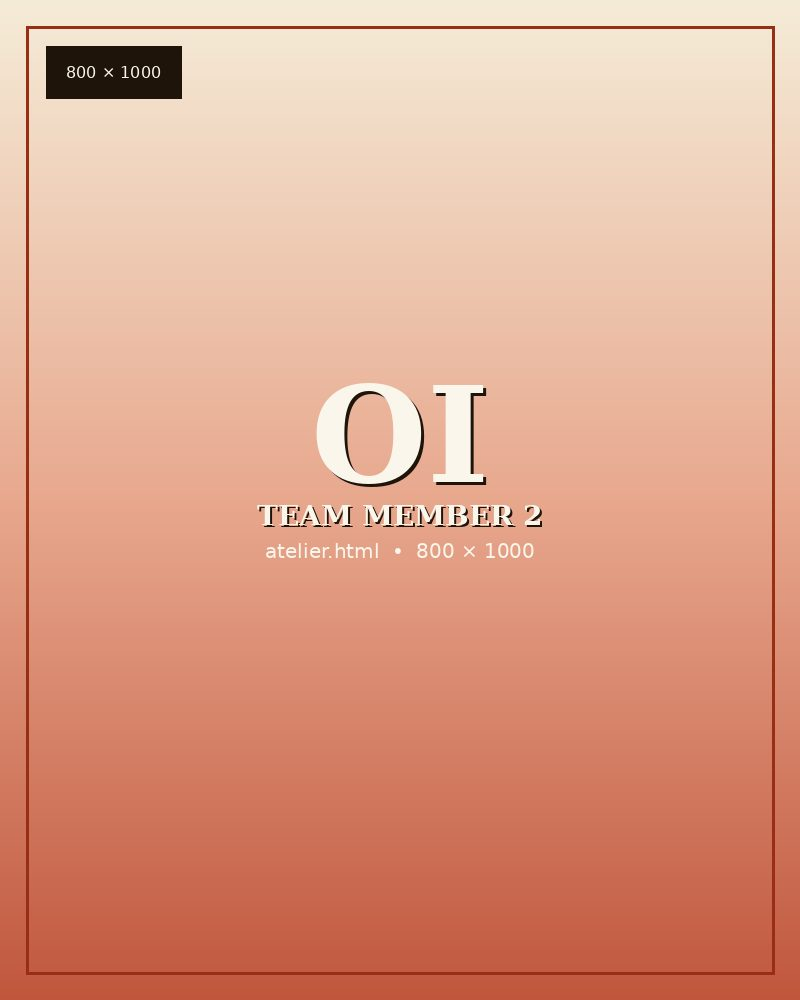
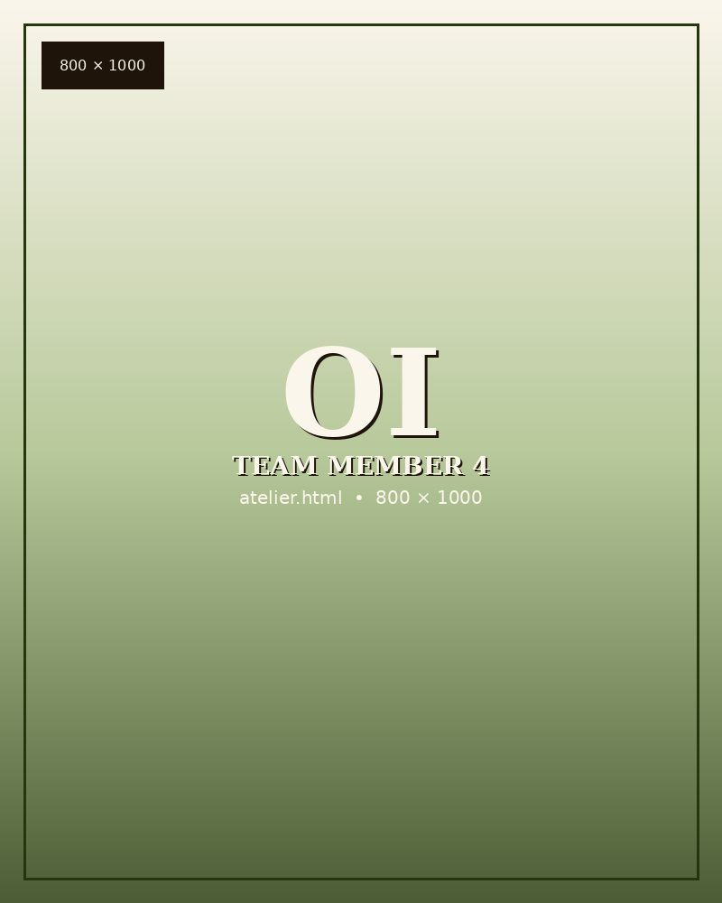
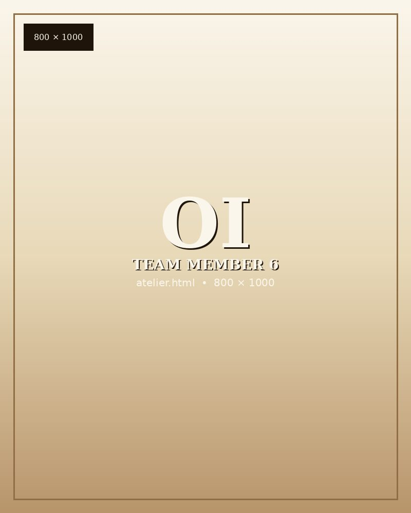

Our experience leading engagements for nearly two decades gives us the aptitude and agility to prepare you for the new frontier ahead. Whether you are in pursuit of technical training to up-skill or simply respite to recharge, we have you covered. Our team expertly crafts your journey from end to end, and you pick your destination: backyard or oceans away.
Landyn Jordan is a public health operations expert and government consultant with a career built at the intersection of community-based work, institutional strategy, and emerging technology. He has led dynamic teams, built collaborative partnerships across corporate, government, and nonprofit institutions, and supported executives in the operational efficiency that turns ambition into outcomes. His formal training is in global health, with deep experience in addressing the social determinants of health.
His leadership is the product of working across disciplines that rarely share a table. Public health taught him the rigor of evidence and the humility of on-the-ground complexity. Government consulting sharpened his ability to translate that evidence into decisions executives can act on. Direct operational work, including managing public health response activities during the pandemic for the third largest health department in the United States, built the instinct for leading dynamic teams under conditions where ambiguity is the baseline. He leads Onyx Isle engagements with the same approach: clear strategy, disciplined operations, and genuine care for the people and places the work touches.
Landyn is a maximizer at heart. He understands that the right relationships, introduced at the right moment, compound into outcomes that no itinerary alone can deliver. "Connection that compounds" is the working premise behind every engagement: enduring relationships, opportunities for career growth, and tangible resources that lead to new horizons. Clients do not leave with a trip. They leave with traction and leverage.
Our team carries deep local understanding alongside durable global connections. Each engagement is approached as a bespoke and curated experience, built from scratch around the interests, goals, and appetite for exploration the guest brings to the work. The coordination, the leadership, and the relationships that make that possible are what make the experience unforgettable.
Designs the ground on which each engagement is walked. Prior life in editorial, cultural programming, and museum work.

Holds the itinerary and the details no guest should ever have to think about. Background in high-touch hospitality across three continents.
Keeps the relationships on the ground honest and reciprocal. Speaks the languages of the places we visit and the languages of the people we visit them with.

Builds the workshops, trainings, and commissioned curricula that travel with our clients into their own institutions.
Turns an experience into a set of decisions in the year that follows. Stewards the long arc of each traveler and each cohort.

Drawn from policy, academia, the arts, and the practice of travel itself, available to every engagement as the work requires.